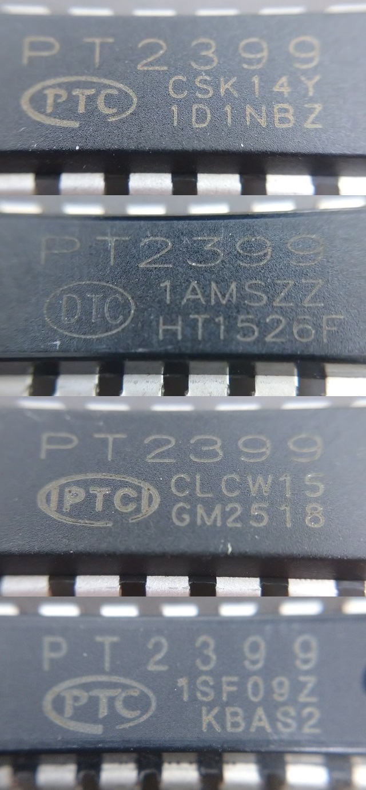

いろいろなPT2399
2021年08月08日 カテゴリー：メモ・雑記
今までに入手した印字が違う4種類のPT2399についてメモしておきます。

・PTCロゴ、たぶん本物
千石電商で購入（現在は販売なし）。秋月電子や共立エレショップの商品写真もこれ。
・DTC
わざと「DTC」にしたのだろうか、偽物感が強い。AliExpressで購入（10個1.5ドル）。
・|PTC|
なぜか縦棒が入っている。AliExpressで購入（10個1.5ドル）。
・PTCロゴ、半角っぽい文字
PTCロゴがデータシート記載のものと同じ。AliExpressで購入（10個1.42ドル）。
それぞれ特性を測定し比較してみたのですが、ノイズが多かったり、ディレイがかからなかったりといった不具合があるものは見つかりませんでした。耐久性は不明ですが、動作が全く違うニセモノというのは案外ないのかもしれません。
---以下2021年8月23日追記---
Reincarnation ChorusのPT2399を最下段のもの（半角っぽい文字）にすると、本物では出ていなかったクロックノイズが発生しました（「DTC」「|PTC|」については手元になくどうなのかわかりません）。通常のディレイ用途でも、やはり本物（最上段）を使う方が安心だと思います。